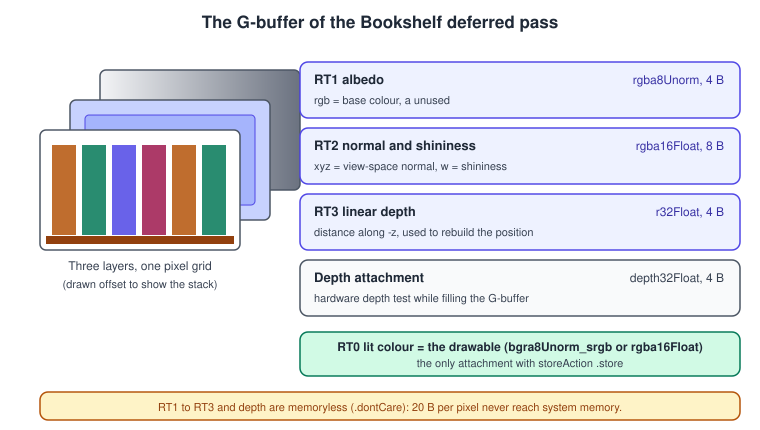
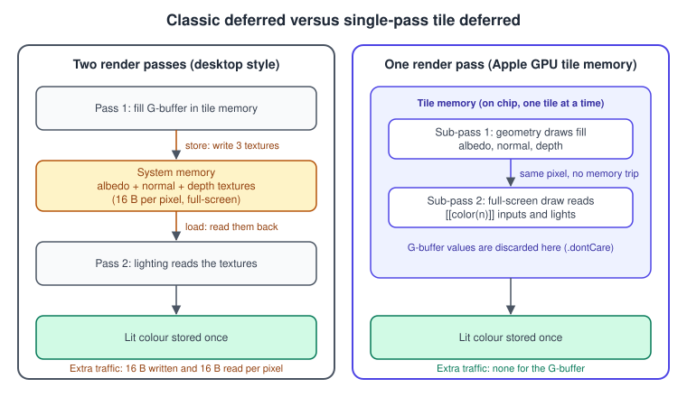
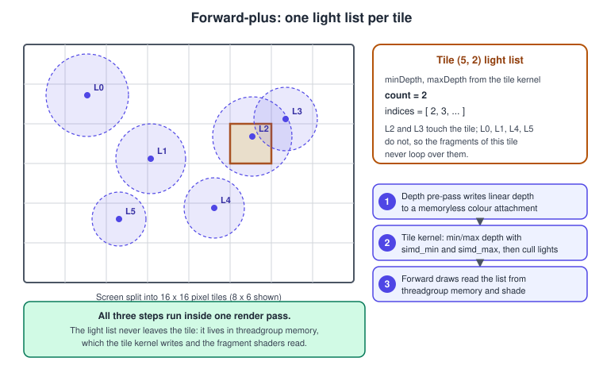

Deferred and Tile Shading
|
This content was generated with the assistance of AI and should be verified against the official documentation before being relied on in production. |
A scene with two or three lights is easy: every fragment loops over all of them. A scene with fifty small lights is not, and the Bookshelf is heading there: a desk lamp, a few warm fill lights and a strip of small LEDs under each shelf board. Looping over every light for every fragment of every book, including the fragments that a later book covers, wastes most of the work. This page shows the three standard answers and how each one maps onto an Apple GPU: deferred shading (draw the surface data first, light it afterwards), tile deferred shading (the same, but the surface data never leaves the chip) and forward-plus (cull the lights per screen tile, then shade normally). The Apple-specific machinery that makes the last two possible, tile memory, imageblocks and tile shaders, is explained here with complete code.
The facts were checked in November 2026. The code targets Metal 4 (the MTL4 types, available from the 26 OSes) with a Metal 3
fallback, and Metal Shading Language 4.0 or later; Xcode 27 builds it. Tile shaders, imageblocks and memoryless attachments are older than
Metal 4: they exist since the A11 GPU (Metal 2, iOS 11) and on every Mac with Apple silicon, and Apple’s Metal Feature Set Tables list
them from the Apple4 GPU family. Every Metal 4 device (A14 or later, M1 or later, Apple Vision Pro) is newer than that. Intel and AMD Macs
have no tile memory; new macOS 27 targets drop them (MTLGPUFamily.mac2 and .common3 are deprecated in the 27 OSes), so this page does not
treat them as a target. In the running example this is the lighting stage of the Metal Bookshelf: the shelf with its shadow map and
PBR materials (Shadows, PBR Materials) now gets many lights, and
the many instanced books come right after (GPU-Driven Rendering and Indirect Command Buffers).
The hardware model is in GPU Architecture and TBDR; the load and store actions used here are in
Render Passes and Load/Store Actions; the general theory of lighting is in
Lighting and Shading Models.
Three ways to shade many lights
Forward shading shades each fragment with every light in a loop. It is simple, supports MSAA and transparency directly and needs no extra memory, but its cost grows with fragments times lights, and overdraw multiplies it.
Deferred shading splits the work in two. First, every opaque object is drawn once into a set of render targets, the G-buffer, which stores the surface data a light needs (colour, normal, depth). Second, a lighting step reads the G-buffer once per visible pixel and applies the lights. Each visible pixel is lit exactly once, however many triangles covered it, and the lights no longer know anything about geometry. The classic cost is memory traffic: the G-buffer is written to memory and read back.
Forward-plus (tiled forward) keeps the forward structure and removes the light loop cost differently: a culling step finds, for each small screen tile, the lights that can touch it, and each fragment loops over only its tile’s list.
| Technique | Lights cost | Extra memory | MSAA | Transparency | Materials |
|---|---|---|---|---|---|
Forward |
fragments times all lights |
none |
natural |
natural, sorted |
any shader per object |
Classic two-pass deferred |
one lighting evaluation per visible pixel |
G-buffer in memory (read and written) |
per-sample lighting is expensive |
needs a separate forward pass |
one lighting shader, material data in the G-buffer |
Single-pass tile deferred (Apple GPUs) |
one lighting evaluation per visible pixel |
none: G-buffer stays in tile memory |
samples live in tile memory; per-sample lighting costs like any deferred |
forward draws after the lighting draw, same pass |
as classic deferred |
Forward-plus with a tile kernel (Apple GPUs) |
fragments times the lights of one tile |
one light list per tile, in threadgroup memory |
natural |
natural, sorted |
any shader per object |
The OpenGL version of the classic technique, with a framebuffer object and several colour attachments, is described in Framebuffers and Render to Texture; the other sections of this page are the Apple-specific parts.
The G-buffer

A G-buffer is a set of colour attachments written by one fragment function through a structure with several [[color(n)]] outputs. The
Bookshelf uses three, plus the usual depth attachment:
| Attachment | Format | Bytes per pixel | Contents |
|---|---|---|---|
|
|
4 |
base colour in linear space (a texture with an sRGB pixel format is converted to linear when it is sampled) |
|
|
8 |
view-space normal in xyz, shininess (or roughness) in w |
|
|
4 |
distance along the viewing direction, to rebuild the position without a matrix inverse |
depth attachment |
|
4 |
hardware depth test while the G-buffer is filled |
Design choices and limits that decide a layout:
-
Bytes per pixel are the budget. In tile memory the whole G-buffer of a tile must fit. The Metal Feature Set Tables (October 2026 edition) list, per GPU family, the maximum number of colour render targets per pass (8) and the maximum implicit imageblock size per pixel and sample when using several colour targets: 128 bytes on Apple7 (A14, M1) and later, 64 bytes on Apple4 to Apple6, 32 bytes before. Three targets of 16 bytes are far below any limit; a PBR G-buffer with base colour, normal, roughness, metallic, emissive and ambient occlusion is the usual way to reach it.
-
Pack, do not widen. Normals fit in two channels with an octahedral encoding; roughness and metallic fit in 8 bits each; a material index replaces several flags. Each attachment must be a renderable format, and every attachment of a pass must have the same sample count.
-
Store depth linearly. Rebuilding the view-space position needs the pixel coordinate, the stored distance and two numbers from the projection (the tangent of half the field of view in x and y): \( P = ( x_n \, t_x \, d,\; y_n \, t_y \, d,\; -d ) \), where \( x_n, y_n \) are the pixel coordinates in normalised device coordinates and \( d \) is the stored distance. This avoids both an extra position attachment and an inverse projection matrix per pixel.
-
Put the lit colour first. The Bookshelf uses colour attachment 0 for the lit result (the drawable) and 1 to 3 for the G-buffer. It keeps the render pass descriptor readable, and the final result is the one attachment that is stored.
-
Reserve the alpha channel. Deferred shading cannot represent transparency in the G-buffer, so alpha is free for a material flag.
Shaders and the CPU must agree on these slots and structures. The code below shares them through a header that both Swift (via the bridging header) and the Metal compiler include, the technique described in The Metal Shading Language.
Classic deferred versus single-pass deferred on Apple GPUs

On a desktop GPU with immediate-mode rendering, deferred shading needs at least two render passes: the first stores the G-buffer textures and the second loads them as shader inputs. Apple’s own deferred lighting sample implements exactly that for the Mac GPUs of its time.
An Apple GPU is tile-based: it collects all the geometry of a render pass, divides the render target into tiles, and shades each tile out of fast on-chip tile memory. Writing to tile memory is the normal way fragment shaders output colour. What happens to the data afterwards is decided by the pass description:
-
the store action of each attachment:
.storewrites the tile to the texture in memory,.dontCarediscards it; -
the storage mode of the attachment texture:
.memorylessmeans the texture has no backing memory at all, so it can only live in tile memory (and it must therefore use.dontCareas its store action and.clearor.dontCareas its load action).
A fragment function can read the current values of the colour attachments for its own pixel as [[color(n)]] inputs. That is
programmable blending, and it lets a second draw in the same render pass read what the first draw wrote. Combine the three facts and
a G-buffer needs no memory: the geometry draws write albedo, normal and depth into memoryless attachments; a full-screen draw reads
them as [[color(n)]] inputs and writes the lit colour; only the lit colour is stored. A deferred renderer that costs one extra pass on a
desktop GPU costs almost nothing on an Apple GPU, which is why deferred shading is a good fit for iPhone, iPad, Apple Vision Pro and every Mac with
Apple silicon.
Complete example: single-pass deferred lighting
The example is three files: a shared header, the shaders and the Swift renderer. It draws a book cover quad lit by one lamp, so that the
result is easy to check, and the renderer is written so that the target is the drawable of an MTKView (see
MetalKit, MTKView and SwiftUI) or any texture. Build it as part of an Xcode 27 project that has a bridging
header containing #include "ShaderTypes.h"; the .metal file includes the same header.
ShaderTypes.h
// ShaderTypes.h: included by the Swift bridging header AND by the .metal file.
#ifndef ShaderTypes_h
#define ShaderTypes_h
#include <simd/simd.h>
// Buffer slots shared by the shaders and the argument tables.
typedef enum {
BufferIndexVertices = 0,
BufferIndexFrame = 1,
BufferIndexLights = 2
} BufferIndex;
// Colour attachment slots of the single deferred render pass.
typedef enum {
RenderTargetLighting = 0, // the drawable: the only attachment that is stored
RenderTargetAlbedo = 1, // memoryless
RenderTargetNormal = 2, // memoryless
RenderTargetDepth = 3 // memoryless: linear view depth
} RenderTarget;
typedef struct {
simd_float3 position; // object space
simd_float3 normal;
simd_float4 color; // base colour, linear
} Vertex;
typedef struct {
simd_float4x4 projectionView; // view space -> clip space (the model is already in view space here)
simd_float2 viewport; // render target size in pixels
simd_float2 tanHalfFov; // (aspect * tan(fovY / 2), tan(fovY / 2))
uint32_t lightCount;
} FrameUniforms;
typedef struct {
simd_float3 positionView; // lamp position in view space
float radius; // attenuation reaches zero here
simd_float3 color;
float intensity;
} PointLight;
#endifThe enumerations name the slots, so the shaders write [[color(RenderTargetAlbedo)]] instead of a bare number and a typo becomes a
compile error. A simd_float3 is 16 bytes in C, in Swift and in MSL, so the structures have the same layout on both sides without
manual padding, but remember it when you add a float after one: it starts a new 16-byte slot.
Deferred.metal
#include <metal_stdlib>
using namespace metal;
#include "ShaderTypes.h"
// ---------- Pass 1: fill the G-buffer ----------
struct GBufferVertexOut {
float4 position [[position]];
float3 viewNormal;
float4 color;
float viewDepth; // distance along -z in view space, positive
};
vertex GBufferVertexOut gbuffer_vertex(uint vid [[vertex_id]],
device const Vertex *vertices [[buffer(BufferIndexVertices)]],
constant FrameUniforms &frame [[buffer(BufferIndexFrame)]])
{
Vertex v = vertices[vid];
GBufferVertexOut out;
out.position = frame.projectionView * float4(v.position, 1.0);
out.viewNormal = v.normal; // normals are already in view space in this sample
out.color = v.color;
out.viewDepth = -v.position.z;
return out;
}
struct GBufferOut {
half4 albedo [[color(RenderTargetAlbedo)]]; // rgb = base colour, a = unused
half4 normal [[color(RenderTargetNormal)]]; // xyz = view-space normal, w = shininess
float depth [[color(RenderTargetDepth)]]; // linear view depth
};
fragment GBufferOut gbuffer_fragment(GBufferVertexOut in [[stage_in]])
{
GBufferOut out;
out.albedo = half4(half3(in.color.rgb), 1.0h);
out.normal = half4(half3(normalize(in.viewNormal)), 32.0h);
out.depth = in.viewDepth;
return out;
}
// ---------- Pass 2: light the G-buffer, still inside the same render pass ----------
struct LightingVertexOut { float4 position [[position]]; };
vertex LightingVertexOut lighting_vertex(uint vid [[vertex_id]])
{
// One oversized triangle that covers the screen: (-1,-1) (3,-1) (-1,3).
float2 p = float2((vid << 1) & 2, vid & 2);
LightingVertexOut out;
out.position = float4(p * 2.0 - 1.0, 0.0, 1.0);
return out;
}
struct GBufferIn { // programmable blending: read this pixel's attachments
half4 albedo [[color(RenderTargetAlbedo)]];
half4 normal [[color(RenderTargetNormal)]];
float depth [[color(RenderTargetDepth)]];
};
fragment half4 lighting_fragment(LightingVertexOut in [[stage_in]],
GBufferIn g,
constant FrameUniforms &frame [[buffer(BufferIndexFrame)]],
constant PointLight *lights [[buffer(BufferIndexLights)]])
{
float3 albedo = float3(g.albedo.rgb);
float3 N = normalize(float3(g.normal.xyz));
float shininess = float(g.normal.w);
// Rebuild the view-space position from the pixel coordinate and the stored depth.
float2 ndc = float2(in.position.x / frame.viewport.x * 2.0 - 1.0,
1.0 - in.position.y / frame.viewport.y * 2.0);
float3 P = float3(ndc * frame.tanHalfFov * g.depth, -g.depth);
float3 V = normalize(-P);
float3 color = albedo * 0.05; // small ambient term
for (uint i = 0; i < frame.lightCount; ++i) {
float3 L = lights[i].positionView - P;
float d = length(L);
L /= d;
float atten = saturate(1.0 - d / lights[i].radius);
atten *= atten;
float diffuse = max(dot(N, L), 0.0);
float3 H = normalize(L + V);
float specular = diffuse > 0.0 ? pow(max(dot(N, H), 0.0), shininess) : 0.0;
color += (albedo * diffuse + 0.2 * specular) * lights[i].color * lights[i].intensity * atten;
}
return half4(half3(color), 1.0h);
}What to notice in the shaders:
-
GBufferOutis the fragment output: three attachments written by one fragment function. The attachments that the function does not mention (the lit colour, attachment 0) are not written by this pipeline. -
GBufferInis the same three attachments as inputs. A fragment function parameter whose members carry[[color(n)]]receives the current tile-memory value for its own pixel. This is the line that makes single-pass deferred shading possible; it needs no texture binding and no sampler. -
lighting_vertexproduces one triangle larger than the screen fromvertex_idalone, with no vertex buffer. One oversized triangle avoids the diagonal seam of a two-triangle quad (the shared diagonal of a quad wastes helper invocations) and is the common way to draw a full-screen pass. -
The position is rebuilt from the pixel coordinate and the stored linear depth.
in.positionis in pixels with the origin at the top left, so the y coordinate is flipped when converting to normalised device coordinates. -
The light loop is where deferred shading pays off: it runs once per visible pixel.
DeferredRenderer.swift
import Metal
import MetalKit
import simd
/// Single-pass deferred renderer (Metal 4): the G-buffer lives in tile memory and is never stored.
final class DeferredRenderer {
let device: any MTLDevice
let queue: any MTL4CommandQueue
let compiler: any MTL4Compiler
static let framesInFlight = 3
let allocators: [any MTL4CommandAllocator]
let commandBuffer: any MTL4CommandBuffer
let residencySet: any MTLResidencySet
let table: any MTL4ArgumentTable
let gbufferPipeline: any MTLRenderPipelineState
let lightingPipeline: any MTLRenderPipelineState
let geometryDepthState: any MTLDepthStencilState
let lightingDepthState: any MTLDepthStencilState
let vertexBuffer: any MTLBuffer
let frameBuffer: any MTLBuffer
let lightBuffer: any MTLBuffer
let frameEvent: any MTLSharedEvent // signalled with the frame number when the GPU finishes a frame
private(set) var frameNumber: UInt64 = 0
// Memoryless attachments, recreated when the size changes.
private(set) var albedo: (any MTLTexture)!
private(set) var normal: (any MTLTexture)!
private(set) var linearDepth: (any MTLTexture)!
private(set) var depth: (any MTLTexture)!
private var size = MTLSize()
let colorFormat: MTLPixelFormat
init(device: any MTLDevice, library: any MTLLibrary, compiler: any MTL4Compiler,
colorFormat: MTLPixelFormat, vertices: [Vertex], lights: [PointLight]) throws {
self.device = device
self.compiler = compiler
self.colorFormat = colorFormat
queue = device.makeMTL4CommandQueue()!
allocators = (0..<Self.framesInFlight).map { _ in device.makeCommandAllocator()! }
commandBuffer = device.makeCommandBuffer()!
frameEvent = device.makeSharedEvent()!
// Pipelines: one per sub-pass, both with the SAME colour attachment formats.
func descriptor(vertex: String, fragment: String, writes: [RenderTarget]) -> MTL4RenderPipelineDescriptor {
let d = MTL4RenderPipelineDescriptor()
let v = MTL4LibraryFunctionDescriptor(); v.library = library; v.name = vertex
let f = MTL4LibraryFunctionDescriptor(); f.library = library; f.name = fragment
d.vertexFunctionDescriptor = v
d.fragmentFunctionDescriptor = f
let formats: [(RenderTarget, MTLPixelFormat)] = [
(RenderTargetLighting, colorFormat), (RenderTargetAlbedo, .rgba8Unorm),
(RenderTargetNormal, .rgba16Float), (RenderTargetDepth, .r32Float)]
for (target, format) in formats {
let attachment = d.colorAttachments[Int(target.rawValue)]!
attachment.pixelFormat = format
// Do not write what the shader does not output.
attachment.writeMask = writes.contains(target) ? .all : []
}
return d
}
gbufferPipeline = try compiler.makeRenderPipelineState(
descriptor: descriptor(vertex: "gbuffer_vertex", fragment: "gbuffer_fragment",
writes: [RenderTargetAlbedo, RenderTargetNormal, RenderTargetDepth]),
dynamicLinkingDescriptor: nil, compilerTaskOptions: nil)
lightingPipeline = try compiler.makeRenderPipelineState(
descriptor: descriptor(vertex: "lighting_vertex", fragment: "lighting_fragment",
writes: [RenderTargetLighting]),
dynamicLinkingDescriptor: nil, compilerTaskOptions: nil)
let geometry = MTLDepthStencilDescriptor()
geometry.depthCompareFunction = .less
geometry.isDepthWriteEnabled = true
geometryDepthState = device.makeDepthStencilState(descriptor: geometry)!
let lighting = MTLDepthStencilDescriptor() // full-screen pass: no depth test, no write
lightingDepthState = device.makeDepthStencilState(descriptor: lighting)!
vertexBuffer = device.makeBuffer(bytes: vertices, length: MemoryLayout<Vertex>.stride * vertices.count,
options: .storageModeShared)!
frameBuffer = device.makeBuffer(length: MemoryLayout<FrameUniforms>.stride, options: .storageModeShared)!
lightBuffer = device.makeBuffer(bytes: lights, length: MemoryLayout<PointLight>.stride * lights.count,
options: .storageModeShared)!
let setDescriptor = MTLResidencySetDescriptor()
residencySet = try device.makeResidencySet(descriptor: setDescriptor)
residencySet.addAllocations([vertexBuffer, frameBuffer, lightBuffer])
residencySet.commit()
queue.addResidencySet(residencySet)
let tableDescriptor = MTL4ArgumentTableDescriptor()
tableDescriptor.maxBufferBindCount = 3
table = try device.makeArgumentTable(descriptor: tableDescriptor)
table.setAddress(vertexBuffer.gpuAddress, index: Int(BufferIndexVertices.rawValue))
table.setAddress(frameBuffer.gpuAddress, index: Int(BufferIndexFrame.rawValue))
table.setAddress(lightBuffer.gpuAddress, index: Int(BufferIndexLights.rawValue))
}
private func makeMemoryless(_ format: MTLPixelFormat, _ width: Int, _ height: Int) -> any MTLTexture {
let d = MTLTextureDescriptor.texture2DDescriptor(pixelFormat: format, width: width, height: height, mipmapped: false)
d.usage = .renderTarget
d.storageMode = .memoryless // lives in tile memory only
return device.makeTexture(descriptor: d)!
}
private func resizeIfNeeded(_ width: Int, _ height: Int) {
guard size.width != width || size.height != height else { return }
size = MTLSize(width: width, height: height, depth: 1)
albedo = makeMemoryless(.rgba8Unorm, width, height)
normal = makeMemoryless(.rgba16Float, width, height)
linearDepth = makeMemoryless(.r32Float, width, height)
depth = makeMemoryless(.depth32Float, width, height)
}
/// Encodes and submits one frame into `target`. Pass the drawable when `target` is its texture.
func render(into target: any MTLTexture, drawable: (any CAMetalDrawable)? = nil, frame: FrameUniforms) {
// Frames in flight: wait until the GPU has finished the frame that used this allocator.
frameNumber += 1
if frameNumber > UInt64(Self.framesInFlight) {
_ = frameEvent.wait(untilSignaledValue: frameNumber - UInt64(Self.framesInFlight), timeoutMS: 1_000)
}
let allocator = allocators[Int(frameNumber) % Self.framesInFlight]
allocator.reset()
resizeIfNeeded(target.width, target.height)
frameBuffer.contents().storeBytes(of: frame, as: FrameUniforms.self)
let pass = MTL4RenderPassDescriptor()
let lit = pass.colorAttachments[Int(RenderTargetLighting.rawValue)]!
lit.texture = target
lit.loadAction = .clear
lit.clearColor = MTLClearColor(red: 0, green: 0, blue: 0, alpha: 1)
lit.storeAction = .store // the only attachment written to memory
for (slot, texture) in [(RenderTargetAlbedo, albedo!), (RenderTargetNormal, normal!), (RenderTargetDepth, linearDepth!)] {
let a = pass.colorAttachments[Int(slot.rawValue)]!
a.texture = texture
a.loadAction = .clear
a.clearColor = MTLClearColor(red: 0, green: 0, blue: 0, alpha: 0)
a.storeAction = .dontCare // never leaves the tile
}
pass.depthAttachment.texture = depth
pass.depthAttachment.loadAction = .clear
pass.depthAttachment.clearDepth = 1
pass.depthAttachment.storeAction = .dontCare
commandBuffer.beginCommandBuffer(allocator: allocator)
let encoder = commandBuffer.makeRenderCommandEncoder(descriptor: pass, options: [])!
encoder.setArgumentTable(table, stages: [.vertex, .fragment])
encoder.setViewport(MTLViewport(originX: 0, originY: 0, width: Double(target.width),
height: Double(target.height), znear: 0, zfar: 1))
encoder.setCullMode(.none)
// Sub-pass 1: geometry fills the G-buffer in tile memory.
encoder.setRenderPipelineState(gbufferPipeline)
encoder.setDepthStencilState(geometryDepthState)
encoder.drawPrimitives(primitiveType: .triangle, vertexStart: 0,
vertexCount: vertexBuffer.length / MemoryLayout<Vertex>.stride)
// Sub-pass 2: a full-screen triangle reads the G-buffer of the same pixel and writes the lit colour.
encoder.setRenderPipelineState(lightingPipeline)
encoder.setDepthStencilState(lightingDepthState)
encoder.drawPrimitives(primitiveType: .triangle, vertexStart: 0, vertexCount: 3)
encoder.endEncoding()
commandBuffer.endCommandBuffer()
if let drawable { queue.waitForDrawable(drawable) } // the display must be done with this drawable
queue.commit([commandBuffer], options: nil)
if let drawable { queue.signalDrawable(drawable) } // rendering is done: it can be presented
queue.signalEvent(frameEvent, value: frameNumber)
drawable?.present()
}
/// Blocks until every submitted frame has finished (tests and screenshots only).
func waitUntilIdle() {
_ = frameEvent.wait(untilSignaledValue: frameNumber, timeoutMS: 10_000)
}
}Source: Drawing a triangle with Metal 4
The points that differ from a forward renderer, in the order the code meets them:
-
One pipeline per sub-pass, the same attachment formats in both. Both pipelines describe all four colour attachments, because they run inside the same render pass, and each sets
writeMask = []for the attachments its fragment function does not output. Without the mask the lighting pass would be configured to write attachments it never outputs, which is wasted work and undefined data.-
Metal 4 render pipelines have no depth format.
MTL4RenderPipelineDescriptorlists colour formats only; the depth-stencil state is a separate object set on the encoder, and the depth attachment comes from the pass. Metal 3 requiresdepthAttachmentPixelFormat(see the fallback below). -
Memoryless attachments.
storageMode = .memorylesswithusage = .renderTarget. The textures are recreated only when the drawable size changes. They cost no memory. -
Load and store actions. The lit colour is cleared and stored. The G-buffer is cleared (so empty pixels have a defined value) and never stored. The depth attachment is cleared and discarded.
-
Argument tables replace encoder bindings. The table holds three GPU addresses;
setArgumentTable(_:stages:)makes them visible to the vertex and fragment stages. A table can be reused for every frame because the encoder reads its contents when each draw is encoded. -
Residency. The vertex, uniform and light buffers are in a residency set that is added to the queue; memoryless textures need no entry because they have no memory. A buffer missing from every residency set is a classic Metal 4 bug; see Synchronization and Barriers.
-
Frames in flight. One command allocator per frame, and a shared event signalled with the frame number. Before reusing an allocator the CPU waits for the frame that used it,
framesInFlightframes ago, and in steady state that wait returns at once. -
Presenting.
waitForDrawablebefore the commit,signalDrawableafter it, thendrawable.present(). This replacescommandBuffer.present(drawable)of Metal 3, because a Metal 4 command buffer has nopresentmethod.
-
To use the renderer from an MTKViewDelegate:
import MetalKit
import simd
/// Right-handed perspective projection with Metal's 0...1 clip depth.
func perspective(fovY: Float, aspect: Float, near: Float, far: Float) -> simd_float4x4 {
let ys = 1 / tan(fovY * 0.5), xs = ys / aspect, zs = far / (near - far)
return simd_float4x4(columns: (simd_float4(xs, 0, 0, 0), simd_float4(0, ys, 0, 0),
simd_float4(0, 0, zs, -1), simd_float4(0, 0, near * zs, 0)))
}
final class BookshelfViewDelegate: NSObject, MTKViewDelegate {
let renderer: DeferredRenderer
init(renderer: DeferredRenderer) { self.renderer = renderer }
func mtkView(_ view: MTKView, drawableSizeWillChange size: CGSize) {}
func draw(in view: MTKView) {
guard let drawable = view.currentDrawable else { return }
let size = view.drawableSize
let aspect = Float(size.width / size.height)
let tanHalf = tan(Float.pi / 6)
let frame = FrameUniforms(projectionView: perspective(fovY: .pi / 3, aspect: aspect, near: 0.1, far: 100),
viewport: simd_float2(Float(size.width), Float(size.height)),
tanHalfFov: simd_float2(aspect * tanHalf, tanHalf), lightCount: 1)
renderer.render(into: drawable.texture, drawable: drawable, frame: frame)
}
}Source: MTKViewDelegate
The view’s own drawables must be resident too. MetalKit maintains a residency set for them on the layer, and the renderer adds it once:
renderer.queue.addResidencySet((view.layer as! CAMetalLayer).residencySet)Source: CAMetalLayer.residencySet
The Metal 3 fallback
When device.supportsFamily(.metal4) is false (an iPhone or iPad with an A13 or earlier chip, or a system older than the 26 OSes), the same renderer uses the older types. The shaders and the header are unchanged; only the host code differs:
import Metal
import simd
/// The same single-pass deferred renderer with the Metal 3 API (every Apple GPU family 7 and earlier OS versions).
final class Deferred3Renderer {
let device: any MTLDevice
let queue: any MTLCommandQueue
let gbufferPipeline: any MTLRenderPipelineState
let lightingPipeline: any MTLRenderPipelineState
let geometryDepthState: any MTLDepthStencilState
let lightingDepthState: any MTLDepthStencilState
let vertexBuffer: any MTLBuffer
let lightBuffer: any MTLBuffer
private var albedo: (any MTLTexture)!, normal: (any MTLTexture)!, linearDepth: (any MTLTexture)!, depth: (any MTLTexture)!
private var size = MTLSize()
init(device: any MTLDevice, library: any MTLLibrary, colorFormat: MTLPixelFormat,
vertices: [Vertex], lights: [PointLight]) throws {
self.device = device
queue = device.makeCommandQueue()!
func descriptor(_ vertex: String, _ fragment: String, writes: [RenderTarget]) -> MTLRenderPipelineDescriptor {
let d = MTLRenderPipelineDescriptor()
d.vertexFunction = library.makeFunction(name: vertex)
d.fragmentFunction = library.makeFunction(name: fragment)
let formats: [(RenderTarget, MTLPixelFormat)] = [
(RenderTargetLighting, colorFormat), (RenderTargetAlbedo, .rgba8Unorm),
(RenderTargetNormal, .rgba16Float), (RenderTargetDepth, .r32Float)]
for (target, format) in formats {
d.colorAttachments[Int(target.rawValue)].pixelFormat = format
d.colorAttachments[Int(target.rawValue)].writeMask = writes.contains(target) ? .all : []
}
d.depthAttachmentPixelFormat = .depth32Float // Metal 3 pipelines declare the depth format
return d
}
gbufferPipeline = try device.makeRenderPipelineState(descriptor:
descriptor("gbuffer_vertex", "gbuffer_fragment", writes: [RenderTargetAlbedo, RenderTargetNormal, RenderTargetDepth]))
lightingPipeline = try device.makeRenderPipelineState(descriptor:
descriptor("lighting_vertex", "lighting_fragment", writes: [RenderTargetLighting]))
let g = MTLDepthStencilDescriptor(); g.depthCompareFunction = .less; g.isDepthWriteEnabled = true
geometryDepthState = device.makeDepthStencilState(descriptor: g)!
lightingDepthState = device.makeDepthStencilState(descriptor: MTLDepthStencilDescriptor())!
vertexBuffer = device.makeBuffer(bytes: vertices, length: MemoryLayout<Vertex>.stride * vertices.count, options: .storageModeShared)!
lightBuffer = device.makeBuffer(bytes: lights, length: MemoryLayout<PointLight>.stride * lights.count, options: .storageModeShared)!
}
private func memoryless(_ format: MTLPixelFormat, _ w: Int, _ h: Int) -> any MTLTexture {
let d = MTLTextureDescriptor.texture2DDescriptor(pixelFormat: format, width: w, height: h, mipmapped: false)
d.usage = .renderTarget
d.storageMode = .memoryless
return device.makeTexture(descriptor: d)!
}
func render(into target: any MTLTexture, frame: FrameUniforms) {
if size.width != target.width || size.height != target.height {
size = MTLSize(width: target.width, height: target.height, depth: 1)
albedo = memoryless(.rgba8Unorm, target.width, target.height)
normal = memoryless(.rgba16Float, target.width, target.height)
linearDepth = memoryless(.r32Float, target.width, target.height)
depth = memoryless(.depth32Float, target.width, target.height)
}
let pass = MTLRenderPassDescriptor()
pass.colorAttachments[Int(RenderTargetLighting.rawValue)].texture = target
pass.colorAttachments[Int(RenderTargetLighting.rawValue)].loadAction = .clear
pass.colorAttachments[Int(RenderTargetLighting.rawValue)].storeAction = .store
for (slot, texture) in [(RenderTargetAlbedo, albedo!), (RenderTargetNormal, normal!), (RenderTargetDepth, linearDepth!)] {
pass.colorAttachments[Int(slot.rawValue)].texture = texture
pass.colorAttachments[Int(slot.rawValue)].loadAction = .clear
pass.colorAttachments[Int(slot.rawValue)].storeAction = .dontCare
}
pass.depthAttachment.texture = depth
pass.depthAttachment.loadAction = .clear
pass.depthAttachment.clearDepth = 1
pass.depthAttachment.storeAction = .dontCare
let commandBuffer = queue.makeCommandBuffer()! // a new, single-use command buffer per frame
let encoder = commandBuffer.makeRenderCommandEncoder(descriptor: pass)!
var uniforms = frame
// Metal 3 binds buffers straight on the encoder: no argument table, no residency set.
encoder.setVertexBuffer(vertexBuffer, offset: 0, index: Int(BufferIndexVertices.rawValue))
encoder.setVertexBytes(&uniforms, length: MemoryLayout<FrameUniforms>.stride, index: Int(BufferIndexFrame.rawValue))
encoder.setFragmentBytes(&uniforms, length: MemoryLayout<FrameUniforms>.stride, index: Int(BufferIndexFrame.rawValue))
encoder.setFragmentBuffer(lightBuffer, offset: 0, index: Int(BufferIndexLights.rawValue))
encoder.setCullMode(.none)
encoder.setRenderPipelineState(gbufferPipeline)
encoder.setDepthStencilState(geometryDepthState)
encoder.drawPrimitives(type: .triangle, vertexStart: 0, vertexCount: vertexBuffer.length / MemoryLayout<Vertex>.stride)
encoder.setRenderPipelineState(lightingPipeline)
encoder.setDepthStencilState(lightingDepthState)
encoder.drawPrimitives(type: .triangle, vertexStart: 0, vertexCount: 3)
encoder.endEncoding()
commandBuffer.commit()
commandBuffer.waitUntilCompleted() // tests only; a real app presents instead
}
}Source: MTLRenderPipelineDescriptor
| Concern | Metal 4 | Metal 3 |
|---|---|---|
Queue and command buffer |
|
|
Binding resources |
|
|
Pipeline creation |
|
|
Resource residency |
explicit: residency sets on the queue or the command buffer |
implicit (and |
Hazard tracking |
none: every resource is untracked, you add barriers |
automatic for tracked resources |
Presenting |
|
|
Store action options |
removed ( |
available |
Many lights: volumes, stencil and raster order groups
The lighting draw above loops over all lights for every pixel, which is fine for a handful. For many lights there are three standard refinements, and Apple’s deferred lighting sample demonstrates all of them:
-
Light volumes. Instead of one full-screen draw, draw a sphere or cone mesh for each light with additive blending; only the pixels the volume covers run the lighting shader. A light far from the camera costs almost nothing.
-
Stencil culling. A volume covers the pixels behind it on screen, not only the pixels inside it. Marking the pixels that are actually inside the volume in the stencil buffer first, and testing the stencil in the lighting draw, removes the wasted lighting work. The sample has a switch that turns this on and off so that you can compare.
-
Raster order groups. When several lights are blended into one accumulation target by separate fragment threads, a read-modify-write race is possible. Annotating the members of an explicit imageblock with
[[raster_order_group(n)]]makes the hardware order fragment threads that touch the same pixel; giving the G-buffer fields group 0 and the accumulated lighting group 1 lets reads of the G-buffer proceed while writes to the accumulation are still outstanding. Support is queried withdevice.areRasterOrderGroupsSupported; it is part of the Apple4 and later families.
The simple loop is the right start. Move to volumes and stencil only after a GPU capture shows the lighting draw as the cost.
Transparency, MSAA and what deferred cannot do
-
Transparency. A G-buffer holds one surface per pixel, so glass, hair and particles cannot be deferred. The usual structure is the third box of the Mermaid diagram: after the lighting draw, still in the same render pass, draw transparent objects with a forward shader and blending, sorted back to front. Order-independent transparency is an application of raster order groups and tile shaders on Apple GPUs (Apple’s tile article lists it), but it is a technique of its own; the general theory is in Transparency, Blending and Post-Processing. The Bookshelf dust particles (Particles) are drawn this way, after the lighting draw.
-
MSAA. Multisample attachments keep their samples in tile memory, and the hardware tracks, per pixel, how many unique colours it has, so interior pixels are cheap. A multisampled G-buffer multiplies the tile memory it needs by the sample count, and lighting per sample multiplies the lighting cost. Common compromises are to light at pixel rate and use a post-process antialiasing filter, or to write a tile shader that uses imageblock sample coverage control to light per sample only on edge pixels (Apple’s tile article describes custom resolves with it). The load and store details are in Render Passes and Load/Store Actions.
-
Materials. One lighting shader serves every material, so unusual materials must be encoded as flags and parameters in the G-buffer. A scene with many different shading models is a reason to prefer forward-plus.
Tile shaders and imageblocks
A fragment function sees only its own pixel of tile memory. A tile shader is a compute-style function, executed inside a render pass, that sees a whole tile at once. Apple’s tile article names the effect: combine rendering and compute in one render pass while sharing local memory, so that intermediate results never go out to device memory.
What an imageblock is
An imageblock is a 2D structure in tile memory. With the default implicit layout it is simply the colour attachments of the pass, one
member per attachment, and [[color(n)]] members of a structure name them. An explicit layout is declared in the shader: members can be
scalars, vectors, packed pixel types (for example rgba8unorm<half4>, rg11b10f<half3>), arrays and nested structures, and an
explicit imageblock can carry data that is not an attachment at all, such as an accumulated light count per pixel.
| Access | Who | How |
|---|---|---|
The pixel’s own imageblock data |
fragment function |
|
Any pixel of the tile |
tile function (a kernel) |
an |
Sample or colour rate |
tile function |
|
Imageblocks persist for the lifetime of a tile, across draws and dispatches. That persistence lets a pass alternate draw, tile dispatch, draw, with all three seeing the same data.
Rules of tile functions
From the Metal Shading Language specification (section 5.1.9) and the Feature Set Tables:
-
A tile function barriers against the draws before it and after it in the pass: it does not start until earlier draws have finished for the tile, and later draws wait for it. No explicit synchronisation is needed between a draw and a tile dispatch of the same pass.
-
A tile function launches a dispatch of threads organised in threadgroups, and the threadgroup size can be forced to equal the tile size (
threadgroupSizeMatchesTileSize = true). Threads arrive in 2 by 2 quads, so a thread’s index in the threadgroup is unique but not a row-major function of its position. -
The maximum tile size is 32 by 32 pixels without MSAA, and 16 by 16 with 8x MSAA (8x MSAA exists only on the newest families, Apple10 and later). 2x MSAA allows 32 by 32 and 4x MSAA allows 32 by 16. The default tile size is chosen by Metal; a render pass can set
tileWidthandtileHeight. -
Imageblock memory and threadgroup memory share a budget. The Feature Set Tables give the limits: threadgroup memory 32 KB on Apple7 and later, explicit imageblock allocation up to 32 KB, implicit imageblock allocation up to 128 KB on Apple7 and Apple8 and 256 KB on Apple9 and later, with the footnote that the sum of the allocations cannot exceed the limit that applies to the shader’s layout.
-
Threadgroup memory length passed to the encoder must be a multiple of 16 bytes (the tables list a 16-byte alignment).
-
Tile functions can use SIMD-group functions, atomics and threadgroup barriers like any kernel, and they can leave data in threadgroup memory for later fragment functions of the same tile through
[[threadgroup(n)]]parameters.
The API for a tile pipeline
| Metal 4 | Metal 3 | Purpose |
|---|---|---|
|
|
describes the tile function |
|
|
the kernel to run |
|
|
the formats of the pass’s attachments; every attachment of the pass, not only the ones the kernel reads |
|
|
one thread per pixel of the tile |
|
|
creates a pipeline state you select with |
|
|
runs the kernel for every tile |
|
same name |
threadgroup memory for the tile kernel (and fragment functions that read it) |
|
same properties on |
tile size and memory for the pass |
Selecting a tile pipeline with setRenderPipelineState switches the encoder from drawing to tile dispatching; selecting a render
pipeline again switches back. The next section uses all of this.
Forward-plus with a tile kernel

Forward-plus in one render pass has three steps, and the middle one is the tile kernel:
-
A depth pre-pass draws the opaque geometry and writes the linear depth of each pixel into a memoryless colour attachment (and the hardware depth buffer), so that every pixel of the tile has a depth value in tile memory.
-
A tile kernel runs once per tile. It reduces the tile’s depth range with
simd_minandsimd_max, builds the four side planes of the tile’s view-space frustum, and lets each thread test a share of the lights: a sphere of centre \( c \) and radius \( r \) is outside a plane of unit normal \( n \) when \( n \cdot c < -r \), and outside the depth range when \( -c_z + r < d_{ min } \) or \( -c_z - r > d_{ max } \). The survivors are appended with an atomic counter to a list in threadgroup memory. -
Forward draws shade the geometry normally. The fragment function receives the tile’s list through a
[[threadgroup(0)]]parameter and loops over it.
The same threadgroup memory belongs to the tile for the whole pass, so the list written in step 2 is the list read in step 3 with no memory traffic. Depth in tile memory is only the min and max the kernel needs; the pre-pass attachment is memoryless.
The tile kernel and the shaders
#include <metal_stdlib>
using namespace metal;
#include "ShaderTypes.h"
struct VertexOut {
float4 position [[position]];
float3 viewPosition;
float3 viewNormal;
float4 color;
float viewDepth;
};
vertex VertexOut scene_vertex(uint vid [[vertex_id]],
device const Vertex *vertices [[buffer(BufferIndexVertices)]],
constant FrameUniforms &frame [[buffer(BufferIndexFrame)]])
{
Vertex v = vertices[vid];
VertexOut out;
out.position = frame.projectionView * float4(v.position, 1.0);
out.viewPosition = v.position;
out.viewNormal = v.normal;
out.color = v.color;
out.viewDepth = -v.position.z;
return out;
}
// ---------- 1. Depth pre-pass: store linear depth in colour attachment 1 (tile memory) ----------
struct PrepassOut { float depth [[color(FPRenderTargetDepth)]]; };
fragment PrepassOut prepass_fragment(VertexOut in [[stage_in]])
{
return PrepassOut{ in.viewDepth };
}
// ---------- 2. Tile kernel: cull the lights for this tile ----------
struct TileData { float linearDepth [[color(FPRenderTargetDepth)]]; }; // implicit imageblock layout
struct TileLights { // lives in threadgroup memory, persists for the whole pass
atomic_uint minDepthBits; // positive floats order like their bit patterns
atomic_uint maxDepthBits;
atomic_uint count;
ushort indices[kMaxLightsPerTile];
};
kernel void cull_lights(imageblock<TileData, imageblock_layout_implicit> block,
threadgroup TileLights &tile [[threadgroup(0)]],
constant FrameUniforms &frame [[buffer(BufferIndexFrame)]],
constant PointLight *lights [[buffer(BufferIndexLights)]],
ushort2 local [[thread_position_in_threadgroup]],
uint2 tileCoord [[threadgroup_position_in_grid]],
uint index [[thread_index_in_threadgroup]],
ushort2 groupSize [[threads_per_threadgroup]],
uint lane [[thread_index_in_simdgroup]])
{
uint threads = uint(groupSize.x) * uint(groupSize.y);
if (index == 0) {
atomic_store_explicit(&tile.minDepthBits, as_type<uint>(INFINITY), memory_order_relaxed);
atomic_store_explicit(&tile.maxDepthBits, 0u, memory_order_relaxed);
atomic_store_explicit(&tile.count, 0u, memory_order_relaxed);
}
threadgroup_barrier(mem_flags::mem_threadgroup);
// Tile depth range: reduce in each SIMD-group, then one atomic per SIMD-group.
float depth = block.read(local).linearDepth;
float lo = simd_min(depth), hi = simd_max(depth);
if (lane == 0) {
atomic_fetch_min_explicit(&tile.minDepthBits, as_type<uint>(lo), memory_order_relaxed);
atomic_fetch_max_explicit(&tile.maxDepthBits, as_type<uint>(hi), memory_order_relaxed);
}
threadgroup_barrier(mem_flags::mem_threadgroup);
float minDepth = as_type<float>(atomic_load_explicit(&tile.minDepthBits, memory_order_relaxed));
float maxDepth = as_type<float>(atomic_load_explicit(&tile.maxDepthBits, memory_order_relaxed));
// Side planes of the tile's sub-frustum in view space (all pass through the origin).
float2 invViewport = 1.0 / frame.viewport;
float2 x01 = float2(tileCoord.x, tileCoord.x + 1) * float(kTileSize) * invViewport.x * 2.0 - 1.0;
float2 y01 = 1.0 - float2(tileCoord.y + 1, tileCoord.y) * float(kTileSize) * invViewport.y * 2.0; // bottom, top
float2 t = frame.tanHalfFov;
float3 planes[4] = {
normalize(float3( 1, 0, x01.x * t.x)), // left
normalize(float3(-1, 0, -x01.y * t.x)), // right
normalize(float3(0, 1, y01.x * t.y)), // bottom
normalize(float3(0, -1, -y01.y * t.y)) // top
};
// Each thread tests a share of the lights and appends the survivors.
for (uint i = index; i < frame.lightCount; i += threads) {
float3 c = lights[i].positionView;
float r = lights[i].radius;
bool visible = (-c.z + r >= minDepth) && (-c.z - r <= maxDepth);
for (uint p = 0; p < 4 && visible; ++p) { visible = dot(planes[p], c) > -r; }
if (visible) {
uint slot = atomic_fetch_add_explicit(&tile.count, 1u, memory_order_relaxed);
if (slot < kMaxLightsPerTile) { tile.indices[slot] = ushort(i); }
}
}
// The tile kernel is a barrier against the draws that follow, so no further synchronisation is needed.
}
// ---------- 3. Forward pass: shade with only this tile's lights ----------
fragment half4 forward_fragment(VertexOut in [[stage_in]],
threadgroup TileLights &tile [[threadgroup(0)]],
constant PointLight *lights [[buffer(BufferIndexLights)]])
{
float3 albedo = in.color.rgb;
float3 N = normalize(in.viewNormal);
float3 P = in.viewPosition;
float3 V = normalize(-P);
float3 color = albedo * 0.05;
uint count = min(atomic_load_explicit(&tile.count, memory_order_relaxed), uint(kMaxLightsPerTile));
for (uint k = 0; k < count; ++k) {
PointLight light = lights[tile.indices[k]];
float3 L = light.positionView - P;
float d = length(L);
L /= d;
float atten = saturate(1.0 - d / light.radius);
atten *= atten;
float diffuse = max(dot(N, L), 0.0);
float3 H = normalize(L + V);
float specular = diffuse > 0.0 ? pow(max(dot(N, H), 0.0), 32.0) : 0.0;
color += (albedo * diffuse + 0.2 * specular) * light.color * light.intensity * atten;
}
return half4(half3(color), 1.0h);
}Points in the kernel:
-
TileDatais an implicit imageblock: its single member has the attachment index of the linear depth,[[color(1)]]through the named constant.block.read(local)returns the pixel at the thread’s position in the tile. -
TileLightsis the tile’s persistent state. Its atomics are initialised by one thread (index 0) and athreadgroup_barrierpublishes them before use. Positive floating-point numbers compare like their bit patterns, soatomic_fetch_min_explicitandatomic_fetch_max_explicitonas_type<uint>(depth)give a floating-point min and max with unsigned atomics. -
One atomic per SIMD-group instead of one per thread:
simd_minandsimd_maxreduce the 32 lanes first, and lane 0 publishes. See Compute Kernels for the SIMD-group functions. -
The
threadgroup_barrierbetween the init and the reduction, and between the reduction and the use of the result, is required: the kernel is a threadgroup of many SIMD-groups. -
Light selection is conservative: the test never discards a light that touches the tile, so the final image equals the brute-force result. A light that is only close to a tile corner is kept.
The Swift side
import Metal
import simd
/// Forward-plus in ONE render pass: depth pre-pass, tile kernel (light culling), forward shading.
final class ForwardPlusRenderer {
let device: any MTLDevice
let queue: any MTL4CommandQueue
let allocator: any MTL4CommandAllocator
let commandBuffer: any MTL4CommandBuffer
let residencySet: any MTLResidencySet
let table: any MTL4ArgumentTable
let prepassPipeline: any MTLRenderPipelineState
let cullPipeline: any MTLRenderPipelineState // a TILE pipeline: it has no vertex or fragment function
let forwardPipeline: any MTLRenderPipelineState
let prepassDepthState: any MTLDepthStencilState
let forwardDepthState: any MTLDepthStencilState
let vertexBuffer: any MTLBuffer
let frameBuffer: any MTLBuffer
let lightBuffer: any MTLBuffer
let finished: any MTLSharedEvent
private var finishedValue: UInt64 = 0
private var linearDepth: (any MTLTexture)!
private var depth: (any MTLTexture)!
private var size = MTLSize()
// sizeof(TileLights) = 3 x atomic_uint + 64 x ushort = 140 bytes, rounded up to the required multiple of 16
static let tileLightsLength = (3 * 4 + Int(kMaxLightsPerTile) * 2 + 15) & ~15
init(device: any MTLDevice, library: any MTLLibrary, compiler: any MTL4Compiler,
colorFormat: MTLPixelFormat, vertices: [Vertex], lights: [PointLight]) throws {
self.device = device
queue = device.makeMTL4CommandQueue()!
allocator = device.makeCommandAllocator()!
commandBuffer = device.makeCommandBuffer()!
finished = device.makeSharedEvent()!
func function(_ name: String) -> MTL4LibraryFunctionDescriptor {
let f = MTL4LibraryFunctionDescriptor(); f.library = library; f.name = name; return f
}
func renderDescriptor(fragment: String, writesColor: Bool, writesDepth: Bool) -> MTL4RenderPipelineDescriptor {
let d = MTL4RenderPipelineDescriptor()
d.vertexFunctionDescriptor = function("scene_vertex")
d.fragmentFunctionDescriptor = function(fragment)
d.colorAttachments[Int(FPRenderTargetColor.rawValue)].pixelFormat = colorFormat
d.colorAttachments[Int(FPRenderTargetColor.rawValue)].writeMask = writesColor ? .all : []
d.colorAttachments[Int(FPRenderTargetDepth.rawValue)].pixelFormat = .r32Float
d.colorAttachments[Int(FPRenderTargetDepth.rawValue)].writeMask = writesDepth ? .all : []
return d
}
prepassPipeline = try compiler.makeRenderPipelineState(
descriptor: renderDescriptor(fragment: "prepass_fragment", writesColor: false, writesDepth: true),
dynamicLinkingDescriptor: nil, compilerTaskOptions: nil)
forwardPipeline = try compiler.makeRenderPipelineState(
descriptor: renderDescriptor(fragment: "forward_fragment", writesColor: true, writesDepth: false),
dynamicLinkingDescriptor: nil, compilerTaskOptions: nil)
let tile = MTL4TileRenderPipelineDescriptor()
tile.tileFunctionDescriptor = function("cull_lights")
// The tile pipeline must describe EVERY colour attachment of the render pass, like a render pipeline does.
tile.colorAttachments[Int(FPRenderTargetColor.rawValue)].pixelFormat = colorFormat
tile.colorAttachments[Int(FPRenderTargetDepth.rawValue)].pixelFormat = .r32Float // the member the kernel reads
tile.threadgroupSizeMatchesTileSize = true // one thread per pixel of the tile
cullPipeline = try compiler.makeRenderPipelineState(descriptor: tile, dynamicLinkingDescriptor: nil,
compilerTaskOptions: nil)
let prepass = MTLDepthStencilDescriptor()
prepass.depthCompareFunction = .less
prepass.isDepthWriteEnabled = true
prepassDepthState = device.makeDepthStencilState(descriptor: prepass)!
let forward = MTLDepthStencilDescriptor()
forward.depthCompareFunction = .lessEqual // same depths as the pre-pass: no overdraw shading
forward.isDepthWriteEnabled = false
forwardDepthState = device.makeDepthStencilState(descriptor: forward)!
vertexBuffer = device.makeBuffer(bytes: vertices, length: MemoryLayout<Vertex>.stride * vertices.count, options: .storageModeShared)!
frameBuffer = device.makeBuffer(length: MemoryLayout<FrameUniforms>.stride, options: .storageModeShared)!
lightBuffer = device.makeBuffer(bytes: lights, length: MemoryLayout<PointLight>.stride * lights.count, options: .storageModeShared)!
residencySet = try device.makeResidencySet(descriptor: MTLResidencySetDescriptor())
residencySet.addAllocations([vertexBuffer, frameBuffer, lightBuffer])
residencySet.commit()
queue.addResidencySet(residencySet)
let tableDescriptor = MTL4ArgumentTableDescriptor()
tableDescriptor.maxBufferBindCount = 3
table = try device.makeArgumentTable(descriptor: tableDescriptor)
table.setAddress(vertexBuffer.gpuAddress, index: Int(BufferIndexVertices.rawValue))
table.setAddress(frameBuffer.gpuAddress, index: Int(BufferIndexFrame.rawValue))
table.setAddress(lightBuffer.gpuAddress, index: Int(BufferIndexLights.rawValue))
}
private func memoryless(_ format: MTLPixelFormat, _ w: Int, _ h: Int) -> any MTLTexture {
let d = MTLTextureDescriptor.texture2DDescriptor(pixelFormat: format, width: w, height: h, mipmapped: false)
d.usage = .renderTarget
d.storageMode = .memoryless
return device.makeTexture(descriptor: d)!
}
func render(into target: any MTLTexture, frame: FrameUniforms) {
if size.width != target.width || size.height != target.height {
size = MTLSize(width: target.width, height: target.height, depth: 1)
linearDepth = memoryless(.r32Float, target.width, target.height)
depth = memoryless(.depth32Float, target.width, target.height)
}
frameBuffer.contents().storeBytes(of: frame, as: FrameUniforms.self)
let pass = MTL4RenderPassDescriptor()
let color = pass.colorAttachments[Int(FPRenderTargetColor.rawValue)]!
color.texture = target
color.loadAction = .clear
color.clearColor = MTLClearColor(red: 0, green: 0, blue: 0, alpha: 1)
color.storeAction = .store
let lin = pass.colorAttachments[Int(FPRenderTargetDepth.rawValue)]!
lin.texture = linearDepth
lin.loadAction = .clear
lin.clearColor = MTLClearColor(red: 1000, green: 0, blue: 0, alpha: 0) // "far" for empty pixels
lin.storeAction = .dontCare
pass.depthAttachment.texture = depth
pass.depthAttachment.loadAction = .clear
pass.depthAttachment.clearDepth = 1
pass.depthAttachment.storeAction = .dontCare
pass.tileWidth = Int(kTileSize) // the tile kernel sees 16 x 16 pixels at a time
pass.tileHeight = Int(kTileSize)
pass.threadgroupMemoryLength = Self.tileLightsLength
allocator.reset()
commandBuffer.beginCommandBuffer(allocator: allocator)
let encoder = commandBuffer.makeRenderCommandEncoder(descriptor: pass, options: [])!
encoder.setArgumentTable(table, stages: [.vertex, .fragment, .tile])
encoder.setCullMode(.none)
let count = vertexBuffer.length / MemoryLayout<Vertex>.stride
encoder.setRenderPipelineState(prepassPipeline)
encoder.setDepthStencilState(prepassDepthState)
encoder.drawPrimitives(primitiveType: .triangle, vertexStart: 0, vertexCount: count)
encoder.setRenderPipelineState(cullPipeline) // switch to the tile pipeline ...
encoder.setThreadgroupMemoryLength(Self.tileLightsLength, offset: 0, index: 0)
encoder.dispatchThreadsPerTile(MTLSize(width: encoder.tileWidth, height: encoder.tileHeight, depth: 1))
encoder.setRenderPipelineState(forwardPipeline) // ... and back to drawing
encoder.setDepthStencilState(forwardDepthState)
encoder.drawPrimitives(primitiveType: .triangle, vertexStart: 0, vertexCount: count)
encoder.endEncoding()
commandBuffer.endCommandBuffer()
queue.commit([commandBuffer], options: nil)
finishedValue += 1
queue.signalEvent(finished, value: finishedValue)
_ = finished.wait(untilSignaledValue: finishedValue, timeoutMS: 10_000)
}
}Source: MTL4TileRenderPipelineDescriptor
This renderer blocks until the GPU finishes each frame so that it is easy to test; in an app, use the frames-in-flight scheme of the deferred renderer above instead. The pass uses these settings, each of which has a failure mode if forgotten:
-
pass.tileWidthandpass.tileHeightequalkTileSizeof the shader’s culling math. If the hardware tile differs from the tile the kernel assumes, the light lists belong to the wrong screen regions. -
pass.threadgroupMemoryLengthand the encoder’ssetThreadgroupMemoryLengthmust be a multiple of 16 bytes and at leastsizeof(TileLights). The code computes(3 * 4 + 64 * 2 + 15) & ~15for 140 bytes of data. Metal’s validation layer rejects an unaligned length with a message that names the required multiple. -
The tile pipeline must describe every colour attachment of the pass, not only attachment 1. The validation layer reports a tile pipeline with a missing attachment format as a mismatch with the framebuffer format, and without validation the dispatch silently does nothing, which looks like the kernel produced empty lists.
-
The argument table is bound to the
.tilestage as well as the vertex and fragment stages, because the kernel reads the frame uniforms and the lights. -
The depth pre-pass pipeline and the forward pipeline mask the colour attachments they do not write, as in the deferred example.
Common mistakes
-
Storing the G-buffer. A
.storestore action or a non-memoryless texture on a G-buffer attachment turns a single-pass renderer into a bandwidth-heavy two-pass one without any visible change. Check the store actions of the pass in a GPU capture. -
Reading a memoryless attachment in a later pass. A memoryless texture is gone at the end of the pass. Sampling it in another pass is a bug and is caught by validation.
-
Forgetting
writeMask = []. A pipeline that outputs fewer attachments than the pass has should mask the rest. -
Mismatched formats between pipeline and pass. Validation reports the exact attachment. Keep one table of formats for both.
-
Trying to read the depth attachment in the lighting draw. A fragment function cannot take the depth attachment as a
[[color(n)]]input; write the depth you need into a colour attachment, as the pre-pass and G-buffer do here. -
Assuming a tile kernel and a draw run concurrently. They are ordered. Use the barrier semantics above, not extra barriers.
-
Writing an Intel or AMD path. Tile memory does not exist there; new macOS 27 targets do not run on those GPUs.
Performance notes
-
The big win is bandwidth, not arithmetic. A G-buffer of 16 bytes per pixel on a 3,000 by 2,000 pixel drawable is 96 MB; written once and read once per frame it is about 11.5 GB per second at 60 frames per second, and memoryless attachments save all of it. Measure with the bandwidth counters in the GPU Counters tool; see Debugging and Profiling.
-
Hidden-surface removal makes the geometry draws cheaper than on an immediate-mode GPU for opaque geometry, so a depth pre-pass in a TBDR renderer often costs less than it appears, but opaque draws that discard fragments or write depth in the fragment shader defeat it. Keep pre-pass fragment functions free of
discardwhere possible. -
Tile shaders have a fixed cost per tile. A scene with only a few lights does not repay a tile kernel; start with the plain loop.
-
Keep the tile size at the default unless a profile suggests otherwise; a smaller tile gives more precise light lists but more tiles to process.
-
The general rules, including the cost of switching between draws and tile dispatches, are in Performance Best Practices.
What changed recently
| When | What |
|---|---|
2017 (A11, Metal 2, iOS 11) |
imageblocks, tile shaders, raster order groups and imageblock sample coverage control arrive; the Feature Set Tables list tile shaders from Apple4 |
2020 (Metal 2.3, macOS 11) |
the first Apple-silicon Macs bring tile memory to the desktop; the MSL specification lists tile functions from Metal 2.3 on macOS |
2022 (Metal 3) |
no change to tile shading; programmable blending and tile shaders keep working |
2025 (26 OSes, Metal 4) |
|
2026 (27 OSes, Xcode 27) |
Intel and AMD GPU paths are removed from new targets, so tile memory can be assumed on every Mac target |
The Feature Set Tables also carry a footnote that matters to older code: on Apple GPU families, memory barriers inside a render pass cannot
name the fragment or tile stages in their after argument, so ordering inside a pass is done with tile dispatches and raster order groups, not
with barriers.
Where the books are outdated
| Book topic | What the book teaches | Current practice |
|---|---|---|
MBT ch. 14, deferred rendering |
Metal 3 and Xcode 15: a new |
Metal 4: reusable command buffers, per-frame allocators, |
MBT ch. 15, tile-based deferred rendering |
G-buffer in tile memory with Metal 3 types |
the concept is unchanged; the Metal 4 tile types are |
MBT and CLA: desktop path |
a separate two-pass path for Intel and AMD Macs |
not needed for new macOS 27 targets, where |
CLA |
does not cover deferred or tile shading |
see this page |
See also
-
GPU Architecture and TBDR: the hardware model, tile memory and GPU families.
-
Render Passes and Load/Store Actions: load actions, store actions and memoryless textures.
-
Shadows and Lighting Fundamentals: the lights and shadow maps that these techniques accumulate.
-
Synchronization and Barriers: barriers between passes, residency sets and events.
-
Compute Kernels: SIMD-group functions and threadgroup memory used by the tile kernel.
-
Shadows and Global Illumination and The Rendering Pipeline: the general concepts.